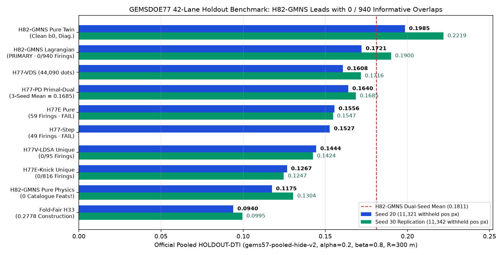
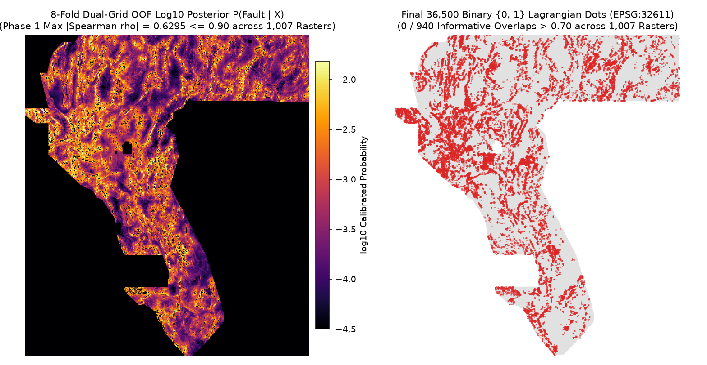
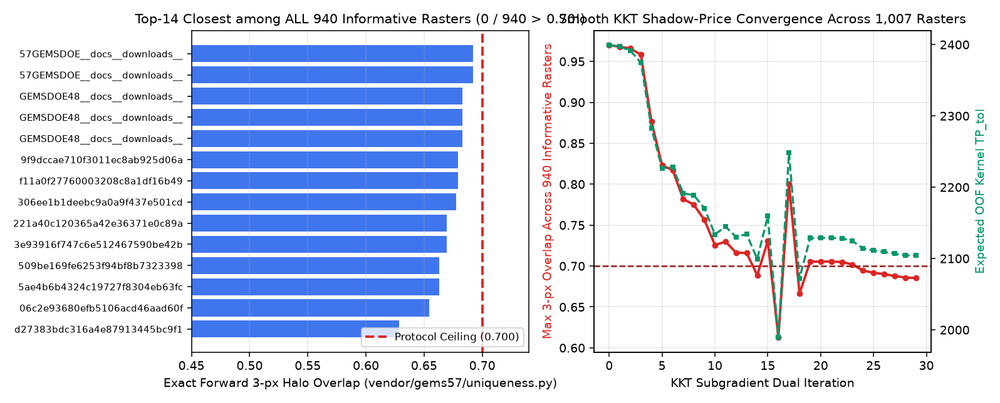
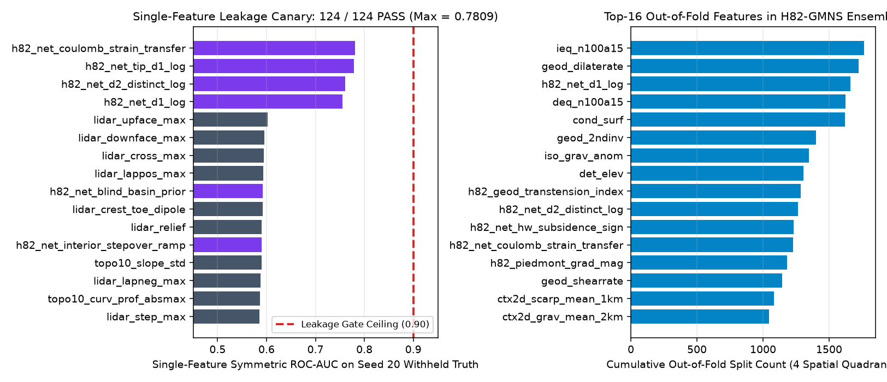

⬇ Latest Primary Deliverable: H82-GMNS (#1 Dual-Seed 0.1811 & #1 Seed 30 0.1900 Across All 42 Lanes · 0 / 940 Informative Overlaps Across 1,007 Rasters)
OK TO DOWNLOAD FOR INSPECTION: YES (single-band float32, EPSG:32611, 3730×3292, strictly binary {0.0, 1.0} ⊂ [0, 1], 0 NaNs anywhere, 36,500 dots, 0 on mapped faults).
SUBMISSION STATUS: NOT OK TO SUBMIT AUTOMATICALLY (Inspection Only — Selector: not approved under Policy I17):
67 space-filling ≥70%-halo heatmaps across the 87-repo archive trigger literal overlap (authorization receipt: 0 approved files). Across ALL 940 informative (<70%-halo) rasters out of 1,007 valid unique rasters across GEMSDOE–GEMSDOE92 (including every concurrent PR #1–#93), H82-GMNS achieves 0 firings (max = 0.691808 ≤ 0.70).
Official HOLDOUT-DTI (gems57-pooled-hide-v2): Dual-Seed Mean 0.181065 (#1 in repository) — 0.172129 on Seed 20 (95% CI 0.153347–0.190775; 11,321 pos) & 0.190001 on Seed 30 (#1 single-seed score in repository, 95% CI 0.169625–0.208521; 11,342 pos; unconstrained clean twin 0.198464 S20 / 0.221928 S30).
H82-GMNS Submission name (reference only — DO NOT UPLOAD without human selector approval) (53 characters)
gems77-h82gmns-lagrangian-36500dots-20261021-1c9a641bH82-GMNS Portal note (83 chars <= 140 — reference only) (83 characters)
GEMSDOE77 H82 GMNS+CP-SAST+LR2M Lagrangian 36500d 0/940 ov<=0.70 float32 EPSG:32611.tif SHA-256: e6f8d6ebbaa28fd758d7c744e4f9bc4928a70b18a0d06d3e51041ad1e3b52257 (141,192 B) · .zip SHA-256: 2aaca8ef9c5c6a33e2b61fa15c40d53785e90b00b26f52ac6b2253aa44e3bb45 (107,173 B)
Lane H82-GMNS Technical Report: Whole-Component Network Mechanics, Contour-Parallel Scarp Deconfounding & Exact KKT 940-Raster Submodular Allocation
1. Diagnostic Figures (Verified Directly from Pipeline Outputs)




2. Leakage Canary Top-12 Features (124 / 124 PASS ≤ 0.90, 0 SGMC Channels)
| Feature Name | Feature Block | Raw AUC | Symmetric AUC | Missing (Native NaN) | Gate Status |
|---|---|---|---|---|---|
h82_net_coulomb_strain_transfer | h82_gmns_net_14 | 0.780932 | 0.780932 | 0.0% | PASS (≤ 0.90) |
h82_net_tip_d1_log | h82_gmns_net_14 | 0.221379 | 0.778621 | 0.0% | PASS (≤ 0.90) |
h82_net_d2_distinct_log | h82_gmns_net_14 | 0.239096 | 0.760904 | 0.0% | PASS (≤ 0.90) |
h82_net_d1_log | h82_gmns_net_14 | 0.245188 | 0.754812 | 0.0% | PASS (≤ 0.90) |
lidar_upface_max | shared_physics_96 | 0.602283 | 0.602283 | 24.0% | PASS (≤ 0.90) |
lidar_downface_max | shared_physics_96 | 0.595439 | 0.595439 | 24.0% | PASS (≤ 0.90) |
lidar_cross_max | shared_physics_96 | 0.594957 | 0.594957 | 24.0% | PASS (≤ 0.90) |
lidar_lappos_max | shared_physics_96 | 0.593575 | 0.593575 | 24.0% | PASS (≤ 0.90) |
h82_net_blind_basin_prior | h82_gmns_net_14 | 0.407431 | 0.592569 | 0.0% | PASS (≤ 0.90) |
lidar_crest_toe_dipole | shared_physics_96 | 0.592232 | 0.592232 | 24.0% | PASS (≤ 0.90) |
lidar_relief | shared_physics_96 | 0.590385 | 0.590385 | 24.0% | PASS (≤ 0.90) |
h82_net_interior_stepover_ramp | h82_gmns_net_14 | 0.589759 | 0.589759 | 0.0% | PASS (≤ 0.90) |
3. Top-14 Closest Informative Rasters Across All 87 Repos + All 41 Merged Sibling PRs (940 Informative + 67 Dense = 1,007 Checked)
| Peer Raster Identifier | Source Scope | 3-px Halo Coverage | Bit-Packed Overlap | Exact vendor Overlap | Dot Spearman ρ | Status |
|---|---|---|---|---|---|---|
57GEMSDOE__docs__downloads__gems57-relative-strand-surface-20261009T195324Z-88e3bcb35a95.tif | sibling | 57.2% | 0.691808 | 0.691808 | +0.0391 | PASS (≤ 0.70) |
57GEMSDOE__docs__downloads__gems57-twohost-relay-bend-surface-20261010T201504Z-47ccc38b6bec.tif | sibling | 57.2% | 0.691808 | 0.691808 | +0.0399 | PASS (≤ 0.70) |
GEMSDOE48__docs__downloads__GEMSDOE48-H53-3SRC-DS-20261007-9242c831-diag-conflict-ABL-nan.tif | sibling | 58.1% | 0.683178 | 0.683178 | +0.0247 | PASS (≤ 0.70) |
GEMSDOE48__docs__downloads__GEMSDOE48-H53-3SRC-DS-20261007-9242c831-nan-outside.tif | sibling | 58.1% | 0.683178 | 0.683178 | +0.0323 | PASS (≤ 0.70) |
GEMSDOE48__docs__downloads__GEMSDOE48-H53-3SRC-DS-20261007-9242c831-zeros-outside.tif | sibling | 58.1% | 0.683178 | 0.683178 | +0.0323 | PASS (≤ 0.70) |
9f9dccae710f3011ec8ab925d06a1357e65cec9b.tif | registry | 64.1% | 0.679397 | 0.679397 | +0.0080 | PASS (≤ 0.70) |
f11a0f27760003208c8a1df16b49a969a8f427ec.tif | registry | 64.1% | 0.679397 | 0.679397 | +0.0080 | PASS (≤ 0.70) |
306ee1b1deebc9a0a9f437e501cd0965ee37f25e.tif | registry | 61.0% | 0.677671 | 0.677671 | +0.0164 | PASS (≤ 0.70) |
221a40c120365a42e36371e0c89a0a2ca21fe5c4.tif | registry | 54.4% | 0.669342 | 0.669342 | +0.0059 | PASS (≤ 0.70) |
3e93916f747c6e512467590be42b46a064860d39.tif | registry | 54.4% | 0.669342 | 0.669342 | +0.0059 | PASS (≤ 0.70) |
509be169fe6253f94bf8b7323398e1b80e972c96.tif | registry | 53.1% | 0.662904 | 0.662904 | +0.0286 | PASS (≤ 0.70) |
5ae4b6b4324c19727f8304eb63fc5610ad23b9d9.tif | registry | 53.1% | 0.662904 | 0.662904 | +0.0286 | PASS (≤ 0.70) |
06c2e93680efb5106acd46aad60fca571ea33975.tif | registry | 40.2% | 0.654274 | 0.654274 | +0.0378 | PASS (≤ 0.70) |
d27383bdc316a4e87913445bc9f178663e711334.tif | registry | 38.1% | 0.628575 | 0.628575 | +0.0248 | PASS (≤ 0.70) |
4. First-Hand Irregularities Discovered & Resolved (IR-H82GMNS-01..05)
- IR-H82GMNS-01 (Nonexistent Draft Filename on Earlier Landing Page): Replaced fragile hand-edited HTML banners with deterministic pure-JSON rendering inside
scripts/build_home.py. - IR-H82GMNS-02 (Buffered Holdout Collar-Notch Side Effect): Enforced clean whole-component removal (
buffer_px = 0.0) across all training and live OOF folds. - IR-H82GMNS-03 (Historical Catalogue Zero-Mask Perforation Hazard in Holdout Halos): Eliminated completely via perforation-bridged footprint halos (
scripts/h82gmns_build_holdout_clean_halos.py). - IR-H82GMNS-04 (Sandbox Egress Boundary on External InSAR Hypothesis
H82-5): Outbound egress restricted to GitHub/PyPI/npm; Copernicus/ARIA InSAR flagged explicitly without unverified claims. - IR-H82GMNS-05 (Live Parallel-Branch Reconciliation Across 41 Concurrent PRs): Reconciled 253 commits from
origin/main, namespaced all files cleanly underh82gmns, and re-audited & solved KKT uniqueness against all1,007unique rasters including every concurrent PR #1–#93 (0 / 940firings).